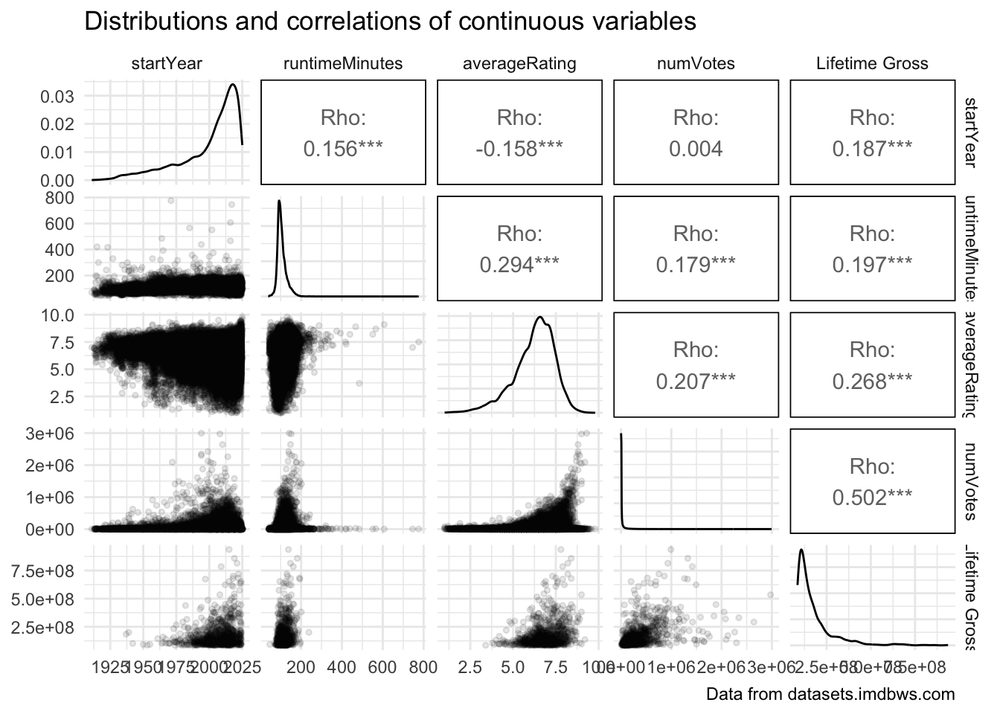
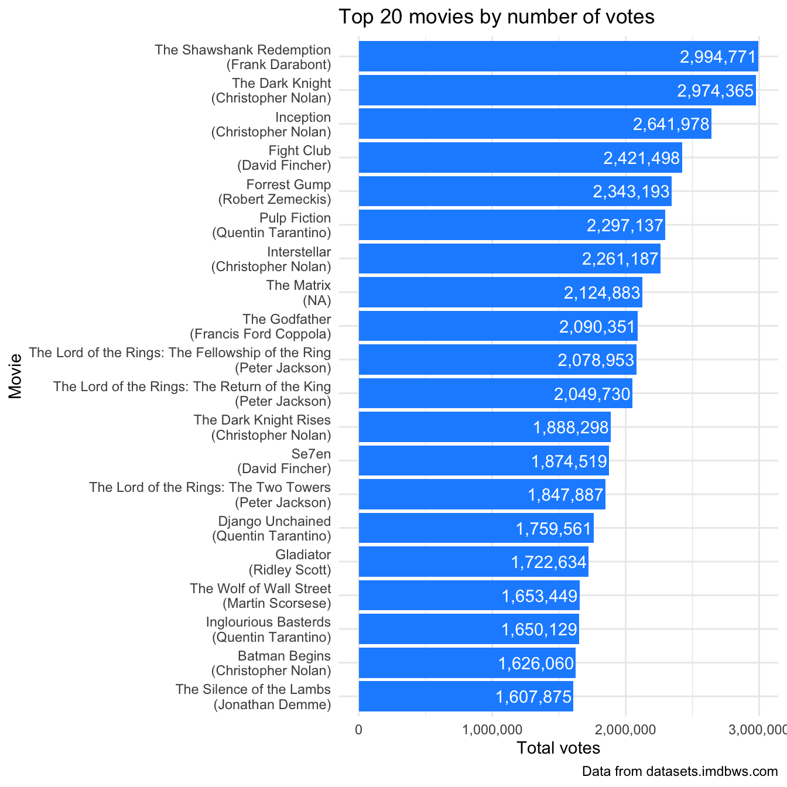
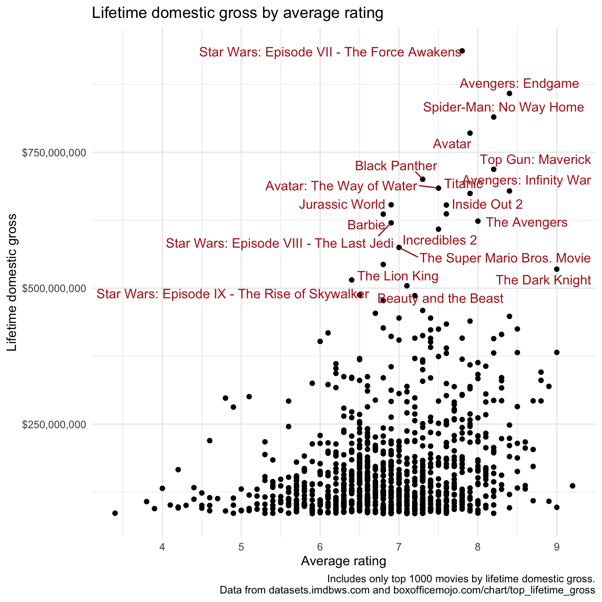
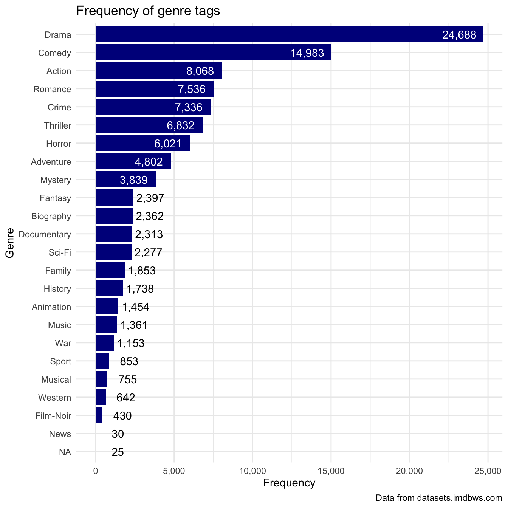
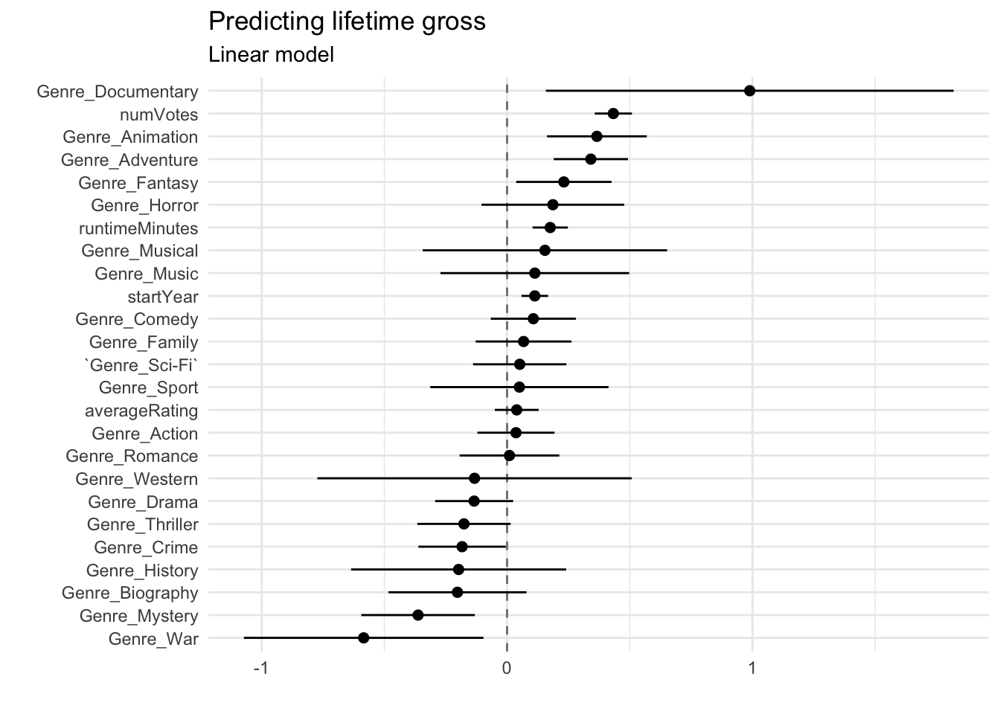
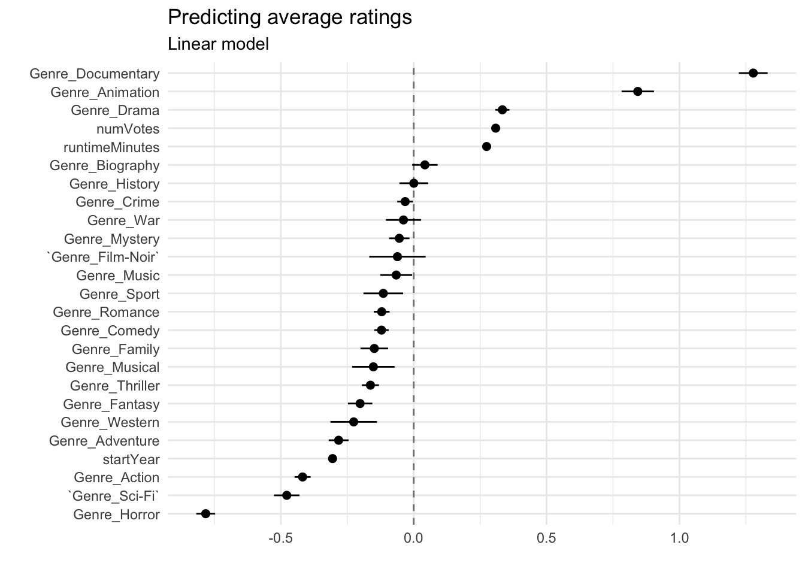
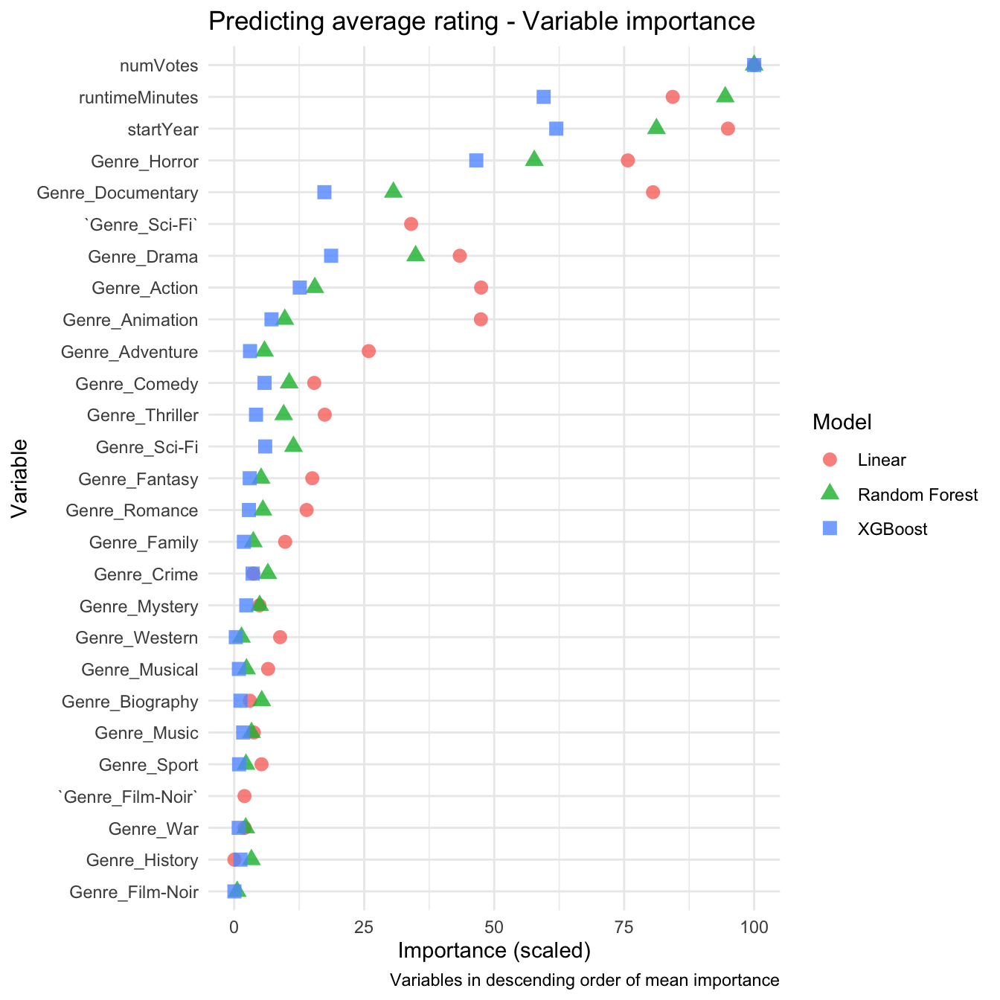
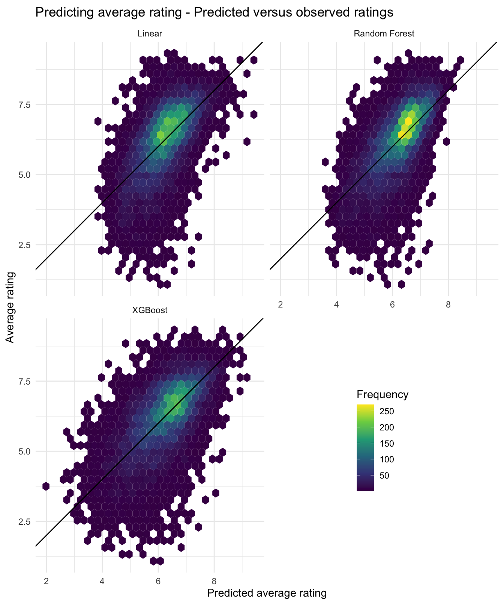
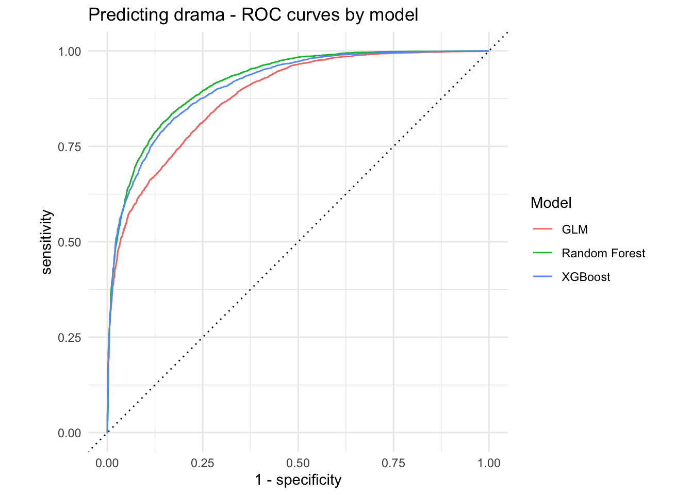
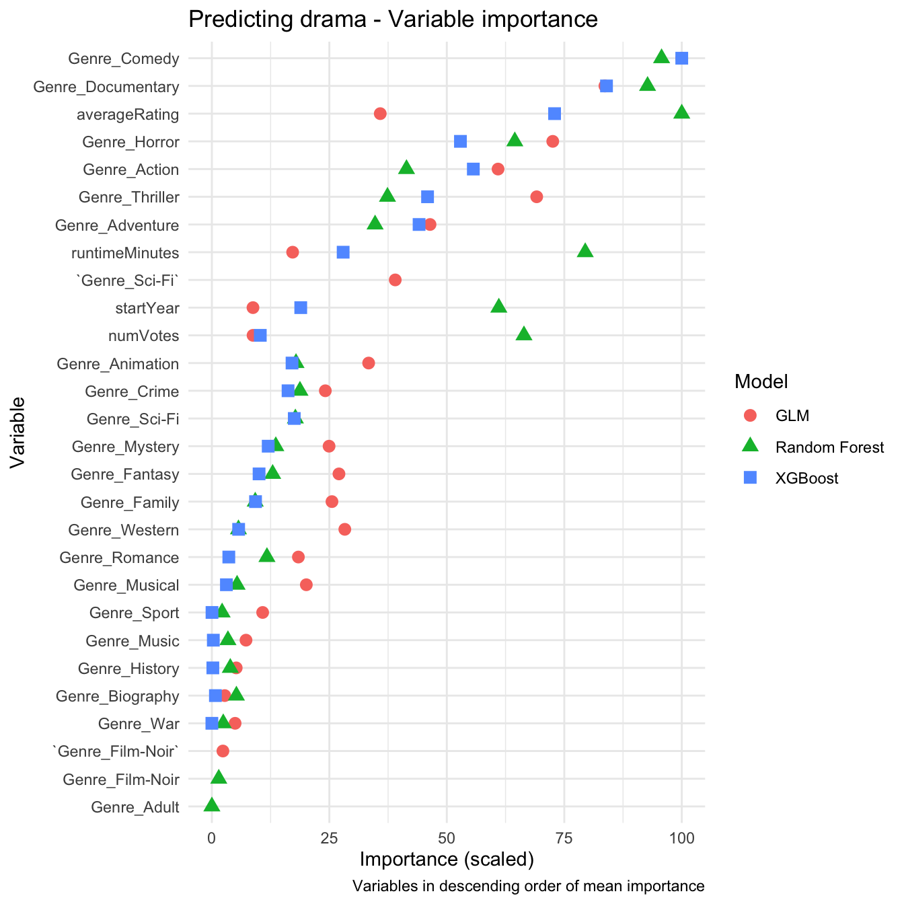

# Load packages
library(tidymodels) # Modelling
library(broom) # Extracting coefficients
library(yardstick) # Evaluating models
library(vip) # Variable importance
library(rvest) # For webscraping
library(tidyverse) # Data wrangling
library(ggrepel) # Extra data viz
# Set theme for plots
theme_set(theme_minimal())Today, I’ll explore some data on movies from IMDB and Box Office Mojo. I’ll begin with some quick data wrangling, then walk through modelling the data with the tidymodels package. I’ve been experimenting with this package a lot recently, and am particularly impressed by how it streamlines running multiple models and comparing the results. Note that this won’t be a full-fledged tutorial for tidymodels (the tidymodels docs cover that very well) nor a deep dive into the models themselves, but more of a worked example.
Gather data
IMDB
The IMDB Non-Commercial Datasets page lists the data sets available, as well as a dictionary for each one. Six data sets contain information about titles (movie, TV show, video game, etc.) and one contains info about individuals. These data sets are quite large; the ratings data includes about 1.5 million titles, and the individuals data includes over 14 million names. To keep things tractable, we’ll limit our exploration to movies with at least 1000 individual ratings (“votes”).
# Read ratings data
ratings_dat <- read_tsv("https://datasets.imdbws.com/title.ratings.tsv.gz",
show_col_types = FALSE) %>%
filter(numVotes >= 1000) # Only titles with at least 1000 votes
# Read names data
names_dat <- read_tsv("https://datasets.imdbws.com/name.basics.tsv.gz",
show_col_types = FALSE,
na = "\\N")
# Read crew data
crew_dat <- read_tsv("https://datasets.imdbws.com/title.crew.tsv.gz",
show_col_types = FALSE,
na = "\\N")For the main title data set (title.basics.tsv.gz), we’ll do a little more data cleaning up front. Specifically, we’ll:
- Limit ourselves to movies (i.e., excluding TV shows, video games, and other types of media)
- Exclude adult content (keeping thing SFW!)
- Read release year and run time as integers
- Split the
genrescolumn (currently a series of comma-separated tags) into multiple binary variables (1 if the tag applies, 0 otherwise)
Using lazy reading via the lazy = TRUE argument to read_tsv() helps to speed up this process, although in my experience the real bottleneck is downloading the data in the first place.
title_dat <- read_tsv("https://datasets.imdbws.com/title.basics.tsv.gz",
na = "\\N",
show_col_types = FALSE,
lazy = TRUE) %>% # Don't load everything into memory!
filter(titleType == "movie", # Only movies
isAdult == 0) %>% # Not adult!
mutate(startYear = as.integer(startYear),
runtimeMinutes = as.integer(runtimeMinutes)) %>%
select(-c(isAdult,endYear)) %>% # Drop unneeded columns
separate_longer_delim(genres, delim = ",") %>% # Split tags into multiple rows
mutate(temp=1) %>% # Create column of 1s
pivot_wider(names_from = genres, # Make wider; one column per genre
values_from = temp,
values_fill = 0,
names_prefix = "Genre_") # Set naming convention for new columnsWarning: There was 1 warning in `filter()`.
ℹ In argument: `titleType == "movie"`.
Caused by warning:
! One or more parsing issues, call `problems()` on your data frame for details,
e.g.:
dat <- vroom(...)
problems(dat)# Check work
title_dat %>% head(10)Box Office Mojo
We’ll supplement the titles data with information on lifetime gross. Conveniently, Box Office Mojo lists the top 1000 domestic films by lifetime gross; less conveniently, the information is in a paged table. To save a bunch of copying and pasting, we’ll do some basic webscraping to get this information into a single data frame.
# Create vector of URLs, one for each page of the table
URLs <- paste0("https://www.boxofficemojo.com/chart/top_lifetime_gross/?offset=",
0:4*200)
# Loop over URLs
top_gross <- map(
URLs, \(url)
read_html(url) %>% # For each URL...
html_elements("table") %>% # Pick out the table
html_table() %>% # Read the table as a list
pluck(1) %>% # Get the first element (the actual data)
# Remove commas and make into integers
mutate(Rank=str_remove(Rank,"\\,") %>% as.integer(),
`Lifetime Gross`=str_remove_all(`Lifetime Gross`,"\\,|\\$") %>%
as.integer())) %>%
list_rbind() # Combine into single data frame
# Check work
top_gross %>% head(10)Join data sets
Let’s join our title (title_dat), ratings (ratings_dat), and domestic gross (top_gross) data sets into a single data frame. title_dat and ratings_dat will automatically join using the unique title identifiers (tconst) present in both data sets. For the domestic gross data, we’ll join by title and release year; because these variables have different names in the title data and domestic gross data (originalTitle versus Title and startYear versus Year), we’ll need to specify which columns in each data set are equivalent, using join_by().
Note the use of inner_join() to join the title and rating data; this ensures that we retain only titles that have ratings associated with them (and at least 1000 votes, thanks to our earlier filtering of the ratings data). In contrast, we join the domestic gross data using left_join(), meaning that we retain titles from the title data even if they don’t appear in the domestic gross data.
Lastly, we’ll join crew_dat to get unique identifiers for each movie’s director, then join names_dat to get the actual names associated with each identifier1.
title_dat <- title_dat %>% # Start with title data set
inner_join(ratings_dat) %>% # Join ratings data set (use tconst as key)
left_join(top_gross, # Join gross data set
by = join_by(originalTitle == Title, # Col names differ -- specify!
startYear == Year)) %>%
left_join(crew_dat) %>% # Join crew data set
left_join(select(names_dat, # Names!
directors=nconst, # Rename variables to match
Director=primaryName)) %>%
select(tconst, primaryTitle:runtimeMinutes, averageRating, numVotes, # Reorganize columns
`Lifetime Gross`, Director, starts_with("Genre"))Joining with `by = join_by(tconst)`
Joining with `by = join_by(tconst)`
Joining with `by = join_by(directors)`Explore
Descriptives
Let’s check our work thus far via glimpse():
title_dat %>% glimpse()Rows: 44,716
Columns: 37
$ tconst <chr> "tt0002130", "tt0002423", "tt0002844", "tt0003014",…
$ primaryTitle <chr> "Dante's Inferno", "Passion", "Fantômas: In the Sha…
$ originalTitle <chr> "L'inferno", "Madame DuBarry", "Fantômas I: À l'omb…
$ startYear <int> 1911, 1919, 1913, 1913, 1913, 1913, 1913, 1914, 191…
$ runtimeMinutes <int> 71, 113, 54, 96, 61, 90, 85, 78, 148, 52, 59, 70, 6…
$ averageRating <dbl> 7.0, 6.6, 6.9, 7.0, 6.9, 6.9, 6.4, 6.4, 7.1, 6.0, 6…
$ numVotes <dbl> 3704, 1049, 2598, 1493, 1765, 1405, 2522, 1493, 409…
$ `Lifetime Gross` <int> NA, NA, NA, NA, NA, NA, NA, NA, NA, NA, NA, NA, NA,…
$ Director <chr> NA, "Ernst Lubitsch", "Louis Feuillade", "Victor Sj…
$ Genre_Romance <dbl> 0, 1, 0, 0, 0, 0, 0, 0, 0, 0, 0, 0, 0, 0, 0, 1, 0, …
$ Genre_Documentary <dbl> 0, 0, 0, 0, 0, 0, 0, 0, 0, 0, 0, 0, 0, 0, 0, 0, 0, …
$ Genre_News <dbl> 0, 0, 0, 0, 0, 0, 0, 0, 0, 0, 0, 0, 0, 0, 0, 0, 0, …
$ Genre_Sport <dbl> 0, 0, 0, 0, 0, 0, 0, 0, 0, 0, 0, 0, 0, 0, 0, 0, 0, …
$ Genre_NA <dbl> 0, 0, 0, 0, 0, 0, 0, 0, 0, 0, 0, 0, 0, 0, 0, 0, 0, …
$ Genre_Action <dbl> 0, 0, 0, 0, 0, 0, 0, 0, 0, 0, 0, 0, 0, 0, 1, 1, 0, …
$ Genre_Adventure <dbl> 1, 0, 0, 0, 0, 0, 0, 0, 1, 0, 0, 0, 0, 0, 1, 0, 0, …
$ Genre_Biography <dbl> 0, 1, 0, 0, 0, 0, 0, 0, 0, 0, 0, 0, 0, 0, 0, 0, 0, …
$ Genre_Drama <dbl> 1, 1, 1, 1, 1, 1, 1, 1, 1, 1, 1, 1, 0, 1, 1, 1, 0, …
$ Genre_Fantasy <dbl> 1, 0, 0, 0, 0, 0, 1, 0, 0, 1, 0, 0, 0, 0, 0, 0, 0, …
$ Genre_Comedy <dbl> 0, 0, 0, 0, 0, 0, 0, 0, 0, 0, 0, 0, 0, 0, 0, 0, 1, …
$ Genre_War <dbl> 0, 0, 0, 0, 0, 0, 0, 0, 0, 0, 0, 0, 0, 0, 0, 0, 0, …
$ Genre_Crime <dbl> 0, 0, 1, 0, 1, 1, 0, 1, 0, 0, 1, 1, 0, 0, 0, 0, 0, …
$ Genre_Family <dbl> 0, 0, 0, 0, 0, 0, 0, 0, 0, 0, 0, 0, 0, 0, 0, 0, 0, …
$ Genre_History <dbl> 0, 0, 0, 0, 0, 0, 0, 0, 1, 0, 0, 0, 0, 0, 0, 0, 0, …
$ `Genre_Sci-Fi` <dbl> 0, 0, 0, 0, 0, 0, 0, 0, 0, 0, 0, 0, 0, 0, 0, 0, 0, …
$ Genre_Thriller <dbl> 0, 0, 0, 0, 0, 0, 0, 0, 0, 0, 0, 0, 0, 0, 0, 0, 0, …
$ Genre_Western <dbl> 0, 0, 0, 0, 0, 0, 0, 0, 0, 0, 0, 0, 0, 0, 0, 0, 0, …
$ Genre_Mystery <dbl> 0, 0, 0, 0, 0, 1, 0, 0, 0, 0, 0, 0, 0, 0, 0, 0, 0, …
$ Genre_Horror <dbl> 0, 0, 0, 0, 0, 0, 1, 1, 0, 0, 0, 0, 1, 0, 0, 0, 0, …
$ Genre_Music <dbl> 0, 0, 0, 0, 0, 0, 0, 0, 0, 0, 0, 0, 0, 0, 0, 0, 0, …
$ Genre_Animation <dbl> 0, 0, 0, 0, 0, 0, 0, 0, 0, 0, 0, 0, 0, 0, 0, 0, 0, …
$ Genre_Musical <dbl> 0, 0, 0, 0, 0, 0, 0, 0, 0, 0, 0, 0, 0, 0, 0, 0, 0, …
$ `Genre_Film-Noir` <dbl> 0, 0, 0, 0, 0, 0, 0, 0, 0, 0, 0, 0, 0, 0, 0, 0, 0, …
$ `Genre_Talk-Show` <dbl> 0, 0, 0, 0, 0, 0, 0, 0, 0, 0, 0, 0, 0, 0, 0, 0, 0, …
$ `Genre_Reality-TV` <dbl> 0, 0, 0, 0, 0, 0, 0, 0, 0, 0, 0, 0, 0, 0, 0, 0, 0, …
$ Genre_Adult <dbl> 0, 0, 0, 0, 0, 0, 0, 0, 0, 0, 0, 0, 0, 0, 0, 0, 0, …
$ `Genre_Game-Show` <dbl> 0, 0, 0, 0, 0, 0, 0, 0, 0, 0, 0, 0, 0, 0, 0, 0, 0, …We see the following variables:
tconst: unique identifier for each movieprimaryTitle: main title by which the movie is knownstartYear: year movie was releasedruntimeMinutes: movie’s runtime, in minutes (natch)averageRating: average of all ratings (1-10 scale)numVotes: total number of ratings receivedLifetime Gross: lifetime domestic gross of movie; only available for the top 1000 highest-grossing movies in our data setDirector: name of movie’s director;NAif more than one directorGenre_X: genre tags (1if the tag applies,0otherwise)
We can get a quick-and-dirty overview of our continuous variables via summary(), and a breakdown of the distributions of (and correlations2 between) these variables via GGally::ggpairs():
title_dat %>%
select("startYear","runtimeMinutes",
"averageRating","numVotes","Lifetime Gross") %>%
summary() startYear runtimeMinutes averageRating numVotes
Min. :1911 Min. : 39.0 Min. :1.00 Min. : 1000
1st Qu.:1989 1st Qu.: 91.0 1st Qu.:5.60 1st Qu.: 1673
Median :2008 Median :100.0 Median :6.40 Median : 3334
Mean :2000 Mean :105.2 Mean :6.24 Mean : 25486
3rd Qu.:2017 3rd Qu.:115.0 3rd Qu.:7.10 3rd Qu.: 10645
Max. :2025 Max. :776.0 Max. :9.80 Max. :2994771
NA's :84
Lifetime Gross
Min. : 85297000
1st Qu.:105874210
Median :137275620
Mean :174204573
3rd Qu.:196461860
Max. :936662225
NA's :43757 title_dat %>%
select("startYear","runtimeMinutes",
"averageRating","numVotes","Lifetime Gross") %>%
GGally::ggpairs(
lower = list(continuous = GGally::wrap("points", # Handle overplotting
alpha = 0.1,
size = 1)),
upper = list(continuous = GGally::wrap(GGally::ggally_cor,
method = "spearman",
use = "pairwise",
title = "Rho"))
) + labs(title = "Distributions and correlations of continuous variables",
caption = "Data from datasets.imdbws.com")
Major takeaways:
startYear: most movies in the data set are relatively recent (post-2008)runtimeMinutes: extreme positive skew. Digging around in the raw data, I found a handful of cases where a miniseries was treated as a single movie, or where the date was copied into the runtime column, but also at least one 25-hour-long movie!numVotes: extreme positive skew!- Correlations between these variables are statistically significant, but small enough that we shouldn’t have glaring issues with multicollinearity (although the correlation between
numVotesandLifetime Grossis potentially troublesome).
Visualization
Let’s start by examining which movies got the most votes overall. Because we joined the crew data, we can also include directors’ names in the plot!
# Most votes overall
title_dat %>%
slice_max(order_by = numVotes, n = 20) %>% # Top 20 films
mutate(Label = paste0(primaryTitle,"\n(",Director,")")) %>% # Add directors
ggplot(aes(x = fct_inorder(Label) %>% fct_rev, y = numVotes)) +
geom_col(fill="dodgerblue") +
geom_text(aes(label = format(numVotes,big.mark = ",")),
color = "white", nudge_y = -3*10^5) +
coord_flip() +
scale_y_continuous(labels = scales::label_number(big.mark = ",")) +
labs(x = "Movie", y="Total votes",
title = "Top 20 movies by number of votes",
caption = "Data from datasets.imdbws.com")
Unsurprisingly, we see a mix of (relatively) recent blockbusters such as Interstellar and The Wolf of Wall Street as well as older classics like The Godfather and Silence of the Lambs.
Next, let’s look at the relationship between ratings and lifetime gross. We’ll use ggrepel::geom_text_repel() to label the highest-grossing films (those making more than $500 million).
title_dat %>%
drop_na(`Lifetime Gross`) %>%
ggplot(aes(x = averageRating, y = `Lifetime Gross`)) +
geom_point()+
geom_text_repel(data = filter(title_dat, `Lifetime Gross` > 500000000),
aes(label = primaryTitle),
color = "firebrick") +
scale_y_continuous(labels = scales::label_dollar()) +
labs(x = "Average rating",
y = "Lifetime domestic gross",
title = "Lifetime domestic gross by average rating",
caption = "Includes only top 1000 movies by lifetime domestic gross.
Data from datasets.imdbws.com and boxofficemojo.com/chart/top_lifetime_gross")Warning: ggrepel: 1 unlabeled data points (too many overlaps). Consider
increasing max.overlaps
Finally, let’s look at the frequency of each genre tag in the data set:
title_dat %>%
select(starts_with("Genre_")) %>%
pivot_longer(everything(), names_prefix = "Genre_") %>%
filter(value==1) %>%
count(name, sort = TRUE) %>% # Get frequency of each tag
ggplot(aes(x=fct_rev(fct_inorder(name)),y=n)) + # Order by frequency
geom_col(fill="darkblue") +
geom_text(aes(y = ifelse(n>3000, n-1500, n+1000), color = n > 3000,
label = format(n,big.mark = ","))) +
scale_y_continuous(labels = scales::label_number(big.mark = ",")) +
coord_flip() +
scale_color_manual(values = c("black","white")) +
theme(legend.position = "none") +
labs(x = "Genre", y = "Frequency",
title = "Frequency of genre tags",
caption = "Data from datasets.imdbws.com")
Drama and comedy are the most frequent tags by a pretty substantial margin!
Model
Let’s shift gears and try building some models with this data via tidymodels. As I mentioned earlier, this won’t be a full tutorial for tidymodels or a deep dive into the models themselves, but rather a worked example of how tidymodels allows us to easily run and compare multiple models. Take our findings with a grain of salt; these models will be very quick, back-of-the-envelope affairs, and we’ll skip over a lot of the steps we’d take if we were actually trying to make significant real-world decisions based on the outputs.
Lifetime gross
To start, let’s make a model to investigate which variables best predict lifetime gross. Because we only have lifetime gross data for the 1000 highest grossing movies in our data set, this will substantially decrease our sample size:
# Define our data set
gross_dat <- title_dat %>%
filter(runtimeMinutes < 300, # Drop movies over 5hrs long...
!is.na(startYear), # Those missing release year...
!is.na(`Lifetime Gross`)) %>% # And those missing gross data
select(tconst,
primaryTitle,
gross = `Lifetime Gross`,
averageRating,
numVotes,
startYear,
runtimeMinutes,
starts_with("Genre_")) %>%
select(-c('Genre_News', 'Genre_NA', # Drop columns for genres that don't occur
'Genre_Talk-Show', 'Genre_Reality-TV', 'Genre_Game-Show'))
glimpse(gross_dat)Rows: 959
Columns: 30
$ tconst <chr> "tt0029583", "tt0031381", "tt0034492", "tt0042332", …
$ primaryTitle <chr> "Snow White and the Seven Dwarfs", "Gone with the Wi…
$ gross <int> 184925486, 200882193, 102247150, 93141149, 87404651,…
$ averageRating <dbl> 7.6, 8.2, 7.3, 7.3, 7.3, 7.3, 7.3, 7.8, 7.9, 8.1, 8.…
$ numVotes <dbl> 221758, 342617, 158217, 178774, 157776, 153329, 1875…
$ startYear <int> 1937, 1939, 1942, 1950, 1953, 1955, 1961, 1964, 1965…
$ runtimeMinutes <int> 83, 238, 69, 74, 77, 76, 79, 139, 197, 172, 106, 78,…
$ Genre_Romance <dbl> 0, 1, 0, 0, 0, 0, 0, 0, 1, 0, 1, 0, 0, 0, 1, 0, 0, 0…
$ Genre_Documentary <dbl> 0, 0, 0, 0, 0, 0, 0, 0, 0, 0, 0, 0, 0, 0, 0, 0, 0, 0…
$ Genre_Sport <dbl> 0, 0, 0, 0, 0, 0, 0, 0, 0, 0, 0, 0, 0, 0, 0, 0, 0, 0…
$ Genre_Action <dbl> 0, 0, 0, 0, 0, 0, 0, 0, 0, 0, 0, 0, 0, 1, 0, 0, 0, 0…
$ Genre_Adventure <dbl> 1, 0, 1, 0, 1, 1, 1, 0, 0, 0, 0, 1, 0, 0, 0, 0, 0, 0…
$ Genre_Biography <dbl> 0, 0, 0, 0, 0, 0, 0, 0, 0, 1, 0, 0, 1, 0, 0, 0, 0, 0…
$ Genre_Drama <dbl> 0, 1, 1, 0, 0, 0, 0, 0, 1, 1, 1, 0, 1, 1, 1, 1, 1, 0…
$ Genre_Fantasy <dbl> 0, 0, 0, 1, 0, 0, 0, 1, 0, 0, 0, 0, 0, 0, 0, 0, 0, 0…
$ Genre_Comedy <dbl> 0, 0, 0, 0, 0, 1, 1, 1, 0, 0, 1, 1, 0, 0, 0, 0, 1, 0…
$ Genre_War <dbl> 0, 1, 0, 0, 0, 0, 0, 0, 1, 0, 0, 0, 0, 0, 0, 0, 0, 0…
$ Genre_Crime <dbl> 0, 0, 0, 0, 0, 0, 0, 0, 0, 0, 0, 0, 1, 0, 0, 1, 0, 0…
$ Genre_Family <dbl> 1, 0, 0, 1, 1, 0, 0, 1, 0, 1, 0, 0, 0, 0, 0, 0, 0, 0…
$ Genre_History <dbl> 0, 0, 0, 0, 0, 0, 0, 0, 0, 0, 0, 0, 0, 0, 0, 0, 0, 0…
$ `Genre_Sci-Fi` <dbl> 0, 0, 0, 0, 0, 0, 0, 0, 0, 0, 0, 0, 0, 0, 0, 0, 0, 0…
$ Genre_Thriller <dbl> 0, 0, 0, 0, 0, 0, 0, 0, 0, 0, 0, 0, 0, 1, 0, 0, 0, 0…
$ Genre_Western <dbl> 0, 0, 0, 0, 0, 0, 0, 0, 0, 0, 0, 0, 0, 0, 0, 0, 0, 0…
$ Genre_Mystery <dbl> 0, 0, 0, 0, 0, 0, 0, 0, 0, 0, 0, 0, 0, 0, 0, 0, 0, 0…
$ Genre_Horror <dbl> 0, 0, 0, 0, 0, 0, 0, 0, 0, 0, 0, 0, 0, 0, 0, 0, 0, 1…
$ Genre_Music <dbl> 0, 0, 0, 0, 0, 0, 0, 0, 0, 0, 0, 0, 0, 0, 0, 0, 0, 0…
$ Genre_Animation <dbl> 1, 0, 1, 1, 1, 1, 1, 0, 0, 0, 0, 1, 0, 0, 0, 0, 0, 0…
$ Genre_Musical <dbl> 0, 0, 0, 0, 0, 0, 0, 0, 0, 0, 0, 0, 0, 0, 0, 0, 0, 0…
$ `Genre_Film-Noir` <dbl> 0, 0, 0, 0, 0, 0, 0, 0, 0, 0, 0, 0, 0, 0, 0, 0, 0, 0…
$ Genre_Adult <dbl> 0, 0, 0, 0, 0, 0, 0, 0, 0, 0, 0, 0, 0, 0, 0, 0, 0, 0…Next, we’ll define a recipe to preprocess our data. This recipe will:
- Predict lifetime gross (
gross) from all other predictors - Treat
tconstandprimaryTitleas identifiers - Log-transform
grossandnumVotesto handle deviation from normality - Normalize all continuous predictors (i.e., convert to z-scores)
- Remove predictors with no variance
# Set the recipe
lm_gross_rec <- recipe(gross ~ ., gross_dat) %>% # Predict gross from all others
update_role(tconst,primaryTitle,new_role = "ID") %>% # Treat as identifiers
step_log(gross, numVotes) %>% # Log transform gross and number of votes
step_normalize(startYear,runtimeMinutes,numVotes,gross) %>% # Normalize
step_zv(all_predictors()) # Remove predictors with no varianceFinally, we’ll fit the model:
# Fit model
lm_gross_fit <- workflow() %>%
add_model(linear_reg()) %>% # Use linear regression
add_recipe(lm_gross_rec) %>% # Pre-process data via our recipie
fit(data = gross_dat) # Fit using our data set
lm_gross_fit══ Workflow [trained] ══════════════════════════════════════════════════════════
Preprocessor: Recipe
Model: linear_reg()
── Preprocessor ────────────────────────────────────────────────────────────────
3 Recipe Steps
• step_log()
• step_normalize()
• step_zv()
── Model ───────────────────────────────────────────────────────────────────────
Call:
stats::lm(formula = ..y ~ ., data = data)
Coefficients:
(Intercept) averageRating numVotes startYear
-0.472949 0.039284 0.432938 0.112942
runtimeMinutes Genre_Romance Genre_Documentary Genre_Sport
0.175688 0.009673 0.988917 0.050235
Genre_Action Genre_Adventure Genre_Biography Genre_Drama
0.036221 0.341288 -0.202291 -0.134246
Genre_Fantasy Genre_Comedy Genre_War Genre_Crime
0.231324 0.107008 -0.584406 -0.183351
Genre_Family Genre_History `Genre_Sci-Fi` Genre_Thriller
0.067307 -0.197419 0.051611 -0.175678
Genre_Western Genre_Mystery Genre_Horror Genre_Music
-0.132603 -0.362759 0.186564 0.113136
Genre_Animation Genre_Musical
0.365934 0.154279 To make sense of the model results, let’s visualize our coefficients via a dot-and-whisker plot:
broom.mixed::tidy(lm_gross_fit, conf.int = TRUE) %>% # Get coefficients and CIs
drop_na(estimate) %>%
arrange(desc(estimate)) %>%
dotwhisker::dwplot(dot_args = list(size = 2, color = "black"),
whisker_args = list(color = "black"),
vline = geom_vline(xintercept = 0,
colour = "grey50",
linetype = 2)) +
labs(title = "Predicting lifetime gross", subtitle = "Linear model")
Looking at the first few variables, a film being a documentary, animation, adventure, and/or fantasy seems to predict higher lifetime gross. Similarly, more votes overall, longer runtimes, and more recent release dates also seem to predict higher lifetime gross. The fact that being a documentary predicts higher lifetime gross seems a little odd – I don’t usually think of documentaries as huge moneymakers. To investigate, let’s see what documentaries are included in our data set for this model:
gross_dat %>%
filter(Genre_Documentary == 1) %>%
select(primaryTitle:runtimeMinutes)Predicting lifetime gross - Documentaries
Crucially, we only have four documentaries in our entire data set – this explains the very wide confidence interval for this coefficient in our dot-and-whisker plot. More to the point, the documentaries we have are an IMAX 3D feature about the International Space Station, a controversial Michael Moore documentary, Jackass 3D (self-explanatory), and a chronicle of Taylor Swift’s Eras Tour. Overall, I’d say we’re looking at a specific type of selection bias; the documentaries that make it into the top 1000 grossing films aren’t necessarily representative of documentaries in general.
Lastly, let’s look at the ten highest and lowest residuals in our results; these are the movies whose lifetime gross was most underestimated and overestimated (respectively) by the model:
augment(lm_gross_fit, gross_dat) %>%
slice_max(.resid, n=10) %>%
select(.resid, .pred, primaryTitle:runtimeMinutes)Predicting lifetime gross - Highest residuals
augment(lm_gross_fit, gross_dat) %>%
slice_min(.resid, n=10) %>%
select(.resid, .pred, primaryTitle:runtimeMinutes)Predicting lifetime gross - Lowest residuals
Average ratings
Next up, let’s see if we can predict a movie’s average rating from its number of votes, release year, run time, and genre tags. To start, we’ll create a new data frame by filtering out movies over 5 hours long and those missing a release year, and selecting only the variables we’re interested in.
# Create data set
rating_model_dat <- title_dat %>%
filter(runtimeMinutes < 300,
!is.na(startYear)) %>%
select(tconst,
primaryTitle,
averageRating,
numVotes,
startYear,
runtimeMinutes,
starts_with("Genre_")) %>%
select(-c('Genre_News', 'Genre_NA',
'Genre_Talk-Show', 'Genre_Reality-TV', 'Genre_Game-Show'))
glimpse(rating_model_dat)Rows: 44,608
Columns: 29
$ tconst <chr> "tt0002130", "tt0002423", "tt0002844", "tt0003014", …
$ primaryTitle <chr> "Dante's Inferno", "Passion", "Fantômas: In the Shad…
$ averageRating <dbl> 7.0, 6.6, 6.9, 7.0, 6.9, 6.9, 6.4, 6.4, 7.1, 6.0, 6.…
$ numVotes <dbl> 3704, 1049, 2598, 1493, 1765, 1405, 2522, 1493, 4095…
$ startYear <int> 1911, 1919, 1913, 1913, 1913, 1913, 1913, 1914, 1914…
$ runtimeMinutes <int> 71, 113, 54, 96, 61, 90, 85, 78, 148, 52, 59, 70, 60…
$ Genre_Romance <dbl> 0, 1, 0, 0, 0, 0, 0, 0, 0, 0, 0, 0, 0, 0, 0, 1, 0, 0…
$ Genre_Documentary <dbl> 0, 0, 0, 0, 0, 0, 0, 0, 0, 0, 0, 0, 0, 0, 0, 0, 0, 0…
$ Genre_Sport <dbl> 0, 0, 0, 0, 0, 0, 0, 0, 0, 0, 0, 0, 0, 0, 0, 0, 0, 0…
$ Genre_Action <dbl> 0, 0, 0, 0, 0, 0, 0, 0, 0, 0, 0, 0, 0, 0, 1, 1, 0, 0…
$ Genre_Adventure <dbl> 1, 0, 0, 0, 0, 0, 0, 0, 1, 0, 0, 0, 0, 0, 1, 0, 0, 0…
$ Genre_Biography <dbl> 0, 1, 0, 0, 0, 0, 0, 0, 0, 0, 0, 0, 0, 0, 0, 0, 0, 0…
$ Genre_Drama <dbl> 1, 1, 1, 1, 1, 1, 1, 1, 1, 1, 1, 1, 0, 1, 1, 1, 0, 1…
$ Genre_Fantasy <dbl> 1, 0, 0, 0, 0, 0, 1, 0, 0, 1, 0, 0, 0, 0, 0, 0, 0, 0…
$ Genre_Comedy <dbl> 0, 0, 0, 0, 0, 0, 0, 0, 0, 0, 0, 0, 0, 0, 0, 0, 1, 0…
$ Genre_War <dbl> 0, 0, 0, 0, 0, 0, 0, 0, 0, 0, 0, 0, 0, 0, 0, 0, 0, 1…
$ Genre_Crime <dbl> 0, 0, 1, 0, 1, 1, 0, 1, 0, 0, 1, 1, 0, 0, 0, 0, 0, 0…
$ Genre_Family <dbl> 0, 0, 0, 0, 0, 0, 0, 0, 0, 0, 0, 0, 0, 0, 0, 0, 0, 0…
$ Genre_History <dbl> 0, 0, 0, 0, 0, 0, 0, 0, 1, 0, 0, 0, 0, 0, 0, 0, 0, 0…
$ `Genre_Sci-Fi` <dbl> 0, 0, 0, 0, 0, 0, 0, 0, 0, 0, 0, 0, 0, 0, 0, 0, 0, 0…
$ Genre_Thriller <dbl> 0, 0, 0, 0, 0, 0, 0, 0, 0, 0, 0, 0, 0, 0, 0, 0, 0, 0…
$ Genre_Western <dbl> 0, 0, 0, 0, 0, 0, 0, 0, 0, 0, 0, 0, 0, 0, 0, 0, 0, 0…
$ Genre_Mystery <dbl> 0, 0, 0, 0, 0, 1, 0, 0, 0, 0, 0, 0, 0, 0, 0, 0, 0, 0…
$ Genre_Horror <dbl> 0, 0, 0, 0, 0, 0, 1, 1, 0, 0, 0, 0, 1, 0, 0, 0, 0, 0…
$ Genre_Music <dbl> 0, 0, 0, 0, 0, 0, 0, 0, 0, 0, 0, 0, 0, 0, 0, 0, 0, 0…
$ Genre_Animation <dbl> 0, 0, 0, 0, 0, 0, 0, 0, 0, 0, 0, 0, 0, 0, 0, 0, 0, 0…
$ Genre_Musical <dbl> 0, 0, 0, 0, 0, 0, 0, 0, 0, 0, 0, 0, 0, 0, 0, 0, 0, 0…
$ `Genre_Film-Noir` <dbl> 0, 0, 0, 0, 0, 0, 0, 0, 0, 0, 0, 0, 0, 0, 0, 0, 0, 0…
$ Genre_Adult <dbl> 0, 0, 0, 0, 0, 0, 0, 0, 0, 0, 0, 0, 0, 0, 0, 0, 0, 0…Next, we’ll split this data set into a training and a test set. The training set will used to train our models (hence the name); the test set will be used to evaluate how well they generalize to new data.
set.seed(1337) # Set seed for reproducibility
rating_data_split <- initial_split(rating_model_dat, prop = 3/4)
rating_data_train <- training(rating_data_split)
rating_data_test <- testing(rating_data_split)Now we’ll specify a data pre-processing recipe that will:
- Predict average rating (
averageRating) from all other predictors - Treat
tconstandprimaryTitleas identifiers - Log-transform
numVotesto handle deviation from normality - Normalize all continuous predictors (i.e., convert to z-scores)
# Set the recipe
rating_rec <- recipe(averageRating ~ ., rating_model_dat) %>% # Set formula
update_role(tconst, primaryTitle, new_role = "ID") %>% # Treat as identifiers
step_log(numVotes) %>% # Log transform to address deviation from normality
step_normalize(startYear, runtimeMinutes, numVotes) %>% # Normalize continuous
step_zv(all_predictors()) # Remove predictors with no varianceWe can reuse our work here with each model we run – this is one of the big advantages of tidymodels!
Linear model
First, let’s fit a linear model to our training data.
# Fit model
lm_rating_fit <- workflow() %>% # Set up workflow
add_model(linear_reg()) %>% # Use linear regression
add_recipe(rating_rec) %>% # Use our pre-processing recipe
fit(data = rating_data_train) # Use training data set
# Check results
lm_rating_fit══ Workflow [trained] ══════════════════════════════════════════════════════════
Preprocessor: Recipe
Model: linear_reg()
── Preprocessor ────────────────────────────────────────────────────────────────
3 Recipe Steps
• step_log()
• step_normalize()
• step_zv()
── Model ───────────────────────────────────────────────────────────────────────
Call:
stats::lm(formula = ..y ~ ., data = data)
Coefficients:
(Intercept) numVotes startYear runtimeMinutes
6.3188238 0.3084472 -0.3053317 0.2743756
Genre_Romance Genre_Documentary Genre_Sport Genre_Action
-0.1205021 1.2775734 -0.1144554 -0.4181589
Genre_Adventure Genre_Biography Genre_Drama Genre_Fantasy
-0.2825614 0.0420595 0.3336779 -0.2016875
Genre_Comedy Genre_War Genre_Crime Genre_Family
-0.1212918 -0.0385408 -0.0321719 -0.1483447
Genre_History `Genre_Sci-Fi` Genre_Thriller Genre_Western
0.0004387 -0.4777811 -0.1628879 -0.2258474
Genre_Mystery Genre_Horror Genre_Music Genre_Animation
-0.0542027 -0.7826594 -0.0658001 0.8431900
Genre_Musical `Genre_Film-Noir`
-0.1518250 -0.0612570 As we did for the lifetime gross model, let’s visualize via a dot-and-whisker plot:
broom.mixed::tidy(lm_rating_fit, conf.int = TRUE) %>%
drop_na(estimate) %>%
arrange(desc(estimate)) %>%
dotwhisker::dwplot(dot_args = list(size = 2, color = "black"),
whisker_args = list(color = "black"),
vline = geom_vline(xintercept = 0, colour = "grey50", linetype = 2)) +
labs(title = "Predicting average ratings", subtitle = "Linear model")
Out of curiosity, let’s see the 20 movies with the lowest (most) negative residuals – in other words, the movies for which our model most overestimated ratings:
augment(lm_rating_fit, rating_model_dat) %>%
slice_min(.resid, n=20) %>%
select(.pred, .resid, primaryTitle:runtimeMinutes)Predicting average ratings - Lowest residuals
The presence of two Justin Bieber films near the top of the list jumps out at me, as do the titles “The Trump Prophecy” and “Buck Breaking”. If I had to guess, we’re seeing films that have attracted more (negative) attention due to their content than would be expected based purely on the variables available to our model. This highlights a crucial shortcoming of our model: other than the genre tags, it doesn’t incorporate any information about what the films are actually about.
Same thing, but now the highest residuals:
augment(lm_rating_fit, rating_model_dat) %>%
slice_max(.resid, n=20) %>%
select(.pred, .resid, primaryTitle:runtimeMinutes)Predicting average ratings - Highest residuals
These appear to be mainly non-English titles, released recently, with relatively few votes (recall that our threshold for inclusion in the data set was 1000 votes).
Random forest
With only a few extra lines of code, we can run the same analysis using a different model! Let’s try a random forest model – all we need to do is set up the engine we want to use (ranger), specifying the mode (regression, since our outcome is continuous), the number of trees (trees), and the method to be used to assess variable importance (importance)3.
# Set the engine
rf_mod <- rand_forest(mode = "regression", trees = 1000) %>%
set_engine("ranger", importance="impurity")
# Set workflow and fit model
rf_rating_fit <- workflow() %>%
add_model(rf_mod) %>%
add_recipe(rating_rec) %>% # Same recipe as before!
fit(data = rating_data_train)
rf_rating_fit══ Workflow [trained] ══════════════════════════════════════════════════════════
Preprocessor: Recipe
Model: rand_forest()
── Preprocessor ────────────────────────────────────────────────────────────────
3 Recipe Steps
• step_log()
• step_normalize()
• step_zv()
── Model ───────────────────────────────────────────────────────────────────────
Ranger result
Call:
ranger::ranger(x = maybe_data_frame(x), y = y, num.trees = ~1000, importance = ~"impurity", num.threads = 1, verbose = FALSE, seed = sample.int(10^5, 1))
Type: Regression
Number of trees: 1000
Sample size: 33456
Number of independent variables: 25
Mtry: 5
Target node size: 5
Variable importance mode: impurity
Splitrule: variance
OOB prediction error (MSE): 0.7761085
R squared (OOB): 0.442483 XGBoost
We’ll fit a third model using XGBoost:
# Set the engine
xgb_mod <- boost_tree(engine = "xgboost", mode = "regression", trees = 1000)
# Set workflow and fit model
xgb_rating_fit <- workflow() %>%
add_model(xgb_mod) %>% # Use XGBoost
add_recipe(rating_rec) %>% # Same recipe as before!
fit(data = rating_data_train)
xgb_rating_fit══ Workflow [trained] ══════════════════════════════════════════════════════════
Preprocessor: Recipe
Model: boost_tree()
── Preprocessor ────────────────────────────────────────────────────────────────
3 Recipe Steps
• step_log()
• step_normalize()
• step_zv()
── Model ───────────────────────────────────────────────────────────────────────
##### xgb.Booster
raw: 3.7 Mb
call:
xgboost::xgb.train(params = list(eta = 0.3, max_depth = 6, gamma = 0,
colsample_bytree = 1, colsample_bynode = 1, min_child_weight = 1,
subsample = 1), data = x$data, nrounds = 1000, watchlist = x$watchlist,
verbose = 0, nthread = 1, objective = "reg:squarederror")
params (as set within xgb.train):
eta = "0.3", max_depth = "6", gamma = "0", colsample_bytree = "1", colsample_bynode = "1", min_child_weight = "1", subsample = "1", nthread = "1", objective = "reg:squarederror", validate_parameters = "TRUE"
xgb.attributes:
niter
callbacks:
cb.evaluation.log()
# of features: 25
niter: 1000
nfeatures : 25
evaluation_log:
iter training_rmse
<num> <num>
1 4.1600833
2 2.9903320
--- ---
999 0.4058402
1000 0.4054915Compare
Metrics
To compare our models, we first define a set of metrics:
- Root mean square deviation (
rmse): measures the deviation between observed and model-predicted values. Smaller values represent better fit; a value of 0 (impossible in practice) would represent perfect fit. - R-squared (
rsq): proportion of variance in outcome variable predicted by the model. Ranges from 0.0 to 1.0; larger values represent better fit, with a value of 1.0 (impossible in practice) representing perfect fit.
# Define metrics
rating_metrics <- metric_set(rmse, rsq)Next, we loop over a list of our models, using the augment() function to calculate these metrics for each model. First, let’s see what happens if we calculate these metrics using the training data:
# Make list of models
rating_models <- list("Linear"=lm_rating_fit,
"Random Forest"=rf_rating_fit,
"XGBoost" = xgb_rating_fit)
rating_models %>%
map(\(model)
augment(model, rating_data_train) %>% # Use training data
rating_metrics(averageRating, .pred)) %>%
list_rbind(names_to = "Model") %>%
select(-.estimator) %>%
pivot_wider(names_from = .metric, values_from = .estimate)Predicting average ratings - Model metrics (training data)
XGBoost appears superior by both metrics, but there’s a big caveat – models such as XGBoost (and random forests, to a lesser extent) are prone to overfitting, meaning that their predictions can be hyper-specialized for the data they were trained upon (e.g., rating_data_train) at the expense of their ability to generalize to novel data. To check, we’ll calculate our metrics again, but this time we’ll use our test data (rating_data_test):
rating_models %>%
map(\(model)
augment(model, rating_data_test) %>% # Use test data
rating_metrics(averageRating, .pred)) %>%
list_rbind(names_to = "Model") %>%
select(-.estimator) %>%
pivot_wider(names_from = .metric, values_from = .estimate)Predicting average ratings - Model metrics (test data)
Note that our linear model performs roughly the same, but our random forest and XGBoost models show decreased performance. In particular, while XGBoost appeared to outperform the random forest model on the training data, it performs roughly equivalent to the linear model on the test data.
The takeaway here is that estimating our metrics based on the training data inflated the performance of our random forest and (in particular) XGBoost models; using the test data gives a much more accurate estimate of our metrics.
Variable importance
We can use the vip package to get estimates of variable importance from each of our models, then plot them together:
rating_models %>%
map(\(model) vip::vi(model,scale = T)) %>% # Scale makes estimates comparable
list_rbind(names_to = "Model") %>%
ggplot(aes(x=fct_reorder(Variable, Importance, mean), # Order by mean
y = Importance,
fill = Model, color = Model, shape = Model)) +
geom_point(alpha=0.8, size=3) +
coord_flip() +
labs(title = "Predicting average rating - Variable importance",
x = "Variable", y = "Importance (scaled)",
caption = "Variables in descending order of mean importance")
There’s some divergence between the three models, but overall, number of votes, run time, and release year seem to be the most important predictors across models.
Predicted versus observed ratings
Lastly, let’s compare the predicted versus observed ratings for each of our three models:
rating_models %>%
map(\(model) augment(model, rating_data_test)) %>%
list_rbind(names_to="Model") %>%
ggplot(aes(x=.pred,y=averageRating))+
geom_hex()+
geom_abline(slope = 1) +
coord_fixed() +
scale_fill_viridis_c()+
labs(x="Predicted average rating",y="Average rating", fill = "Frequency",
title = "Predicting average rating - Predicted versus observed ratings")+
facet_wrap(~Model,nrow = 2) +
theme(legend.position = "inside", legend.position.inside = c(.75,.25))
The more closely the distribution follows the diagonal line, the more closely the predicted ratings match the observed ratings. Overall, the XGBoost model seems to have a slight advantage.
Predicting genre
All of our models thus far have examined continuous outcomes. Now, let’s try some models with a categorical outcome. Specifically, let’s see if we can predict whether or not a movie is classified as a drama based on the variables available to us! As with the previous example, we’ll run three models and compare the results: binary logistic regression (GLM), random forest, and XGBoost.
# Define our data set
drama_model_dat <- rating_model_dat %>%
mutate(Drama = factor(Genre_Drama, labels = c("no","yes"))) %>%
select(-Genre_Drama)
# Split data into training/testing sets
# Setting `strata = Drama` ensures that proportion of positive cases
# is roughly equal in training vs test set
set.seed(1337)
genre_data_split <- initial_split(drama_model_dat, strata = Drama)
genre_data_train <- training(genre_data_split)
genre_data_test <- testing(genre_data_split)
# Set the recipe
genre_rec <- recipe(Drama ~ ., genre_data_train) %>%
step_log(numVotes) %>%
step_normalize(averageRating,startYear,runtimeMinutes,numVotes) %>%
update_role(tconst,primaryTitle,new_role = "ID") # Treat as identifiersGLM
Setting up the engine for GLM is straightforward; we technically don’t need to specify mode or engine, since logistic_reg() defaults to mode = "classification" and engine = "glm", but I’ve included them here for completeness.
# Set the engine
genre_mod <- logistic_reg(mode = "classification",
engine = "glm")
# Set the workflow
genre_workflow <- workflow() %>%
add_model(genre_mod) %>%
add_recipe(genre_rec)
# Fit model
genre_fit <- genre_workflow %>%
fit(data = genre_data_train)
# Check results
genre_fit══ Workflow [trained] ══════════════════════════════════════════════════════════
Preprocessor: Recipe
Model: logistic_reg()
── Preprocessor ────────────────────────────────────────────────────────────────
2 Recipe Steps
• step_log()
• step_normalize()
── Model ───────────────────────────────────────────────────────────────────────
Call: stats::glm(formula = ..y ~ ., family = stats::binomial, data = data)
Coefficients:
(Intercept) averageRating numVotes startYear
3.75923 0.45874 0.09723 0.10283
runtimeMinutes Genre_Romance Genre_Documentary Genre_Sport
0.20793 -0.54392 -6.32332 -0.89793
Genre_Action Genre_Adventure Genre_Biography Genre_Fantasy
-1.91524 -1.75050 -0.18449 -1.18757
Genre_Comedy Genre_War Genre_Crime Genre_Family
-3.16581 -0.39853 -0.71781 -1.32834
Genre_History `Genre_Sci-Fi` Genre_Thriller Genre_Western
-0.37178 -2.00270 -2.29839 -2.35082
Genre_Mystery Genre_Horror Genre_Music Genre_Animation
-0.94367 -2.74321 -0.47075 -2.35175
Genre_Musical `Genre_Film-Noir` Genre_Adult
-1.57199 -0.31297 NA
Degrees of Freedom: 33454 Total (i.e. Null); 33429 Residual
Null Deviance: 46010
Residual Deviance: 28000 AIC: 28050Random forest
For a random forest model, we’ll pass a few more arguments to set up the engine.
# Set the engine
genre_rf <- rand_forest(trees = 1000) %>%
set_engine("ranger", importance="impurity") %>%
set_mode("classification")
# Set the workflow
genre_workflow_rf <- workflow() %>%
add_model(genre_rf) %>%
add_recipe(genre_rec)
# # Finalize model and fit
genre_fit_rf <- genre_workflow_rf %>%
fit(data = genre_data_train)
# Check results
genre_fit_rf══ Workflow [trained] ══════════════════════════════════════════════════════════
Preprocessor: Recipe
Model: rand_forest()
── Preprocessor ────────────────────────────────────────────────────────────────
2 Recipe Steps
• step_log()
• step_normalize()
── Model ───────────────────────────────────────────────────────────────────────
Ranger result
Call:
ranger::ranger(x = maybe_data_frame(x), y = y, num.trees = ~1000, importance = ~"impurity", num.threads = 1, verbose = FALSE, seed = sample.int(10^5, 1), probability = TRUE)
Type: Probability estimation
Number of trees: 1000
Sample size: 33455
Number of independent variables: 26
Mtry: 5
Target node size: 10
Variable importance mode: impurity
Splitrule: gini
OOB prediction error (Brier s.): 0.1170917 XGBoost
Lastly, let’s run an XGBoost model:
genre_xgb <- boost_tree() %>%
set_engine("xgboost") %>%
set_mode("classification")
# Set the workflow
genre_workflow_xgb <- workflow() %>%
add_model(genre_xgb) %>%
add_recipe(genre_rec)
# Finalize model and fit
genre_fit_xgb <- genre_workflow_xgb %>%
fit(data = genre_data_train)
genre_fit_xgb══ Workflow [trained] ══════════════════════════════════════════════════════════
Preprocessor: Recipe
Model: boost_tree()
── Preprocessor ────────────────────────────────────────────────────────────────
2 Recipe Steps
• step_log()
• step_normalize()
── Model ───────────────────────────────────────────────────────────────────────
##### xgb.Booster
raw: 61.5 Kb
call:
xgboost::xgb.train(params = list(eta = 0.3, max_depth = 6, gamma = 0,
colsample_bytree = 1, colsample_bynode = 1, min_child_weight = 1,
subsample = 1), data = x$data, nrounds = 15, watchlist = x$watchlist,
verbose = 0, nthread = 1, objective = "binary:logistic")
params (as set within xgb.train):
eta = "0.3", max_depth = "6", gamma = "0", colsample_bytree = "1", colsample_bynode = "1", min_child_weight = "1", subsample = "1", nthread = "1", objective = "binary:logistic", validate_parameters = "TRUE"
xgb.attributes:
niter
callbacks:
cb.evaluation.log()
# of features: 26
niter: 15
nfeatures : 26
evaluation_log:
iter training_logloss
<num> <num>
1 0.5921049
2 0.5357200
--- ---
14 0.3776050
15 0.3730612Compare
Metrics
As previously, we’ll define a set of metrics to compare our model:
- Accuracy (
accuracy): measures the proportion of cases that are predicted correctly. Values closer to 1.00 indicate greater accuracy. - Kappa (
kap): like accuracy, but adjusted based on the proportion of correct predictions that would be expected due to chance alone. - Sensitivity (
sensitivity): the number of predicted positives divided by the number of actual positives. In our case, what proportion of films with the “drama” tag did our models correctly predict as dramas? - Specificity (
specificity): the number of predicted negatives divided by the number of actual negatives. In our case, what proportion of non-drama films did our models correctly predict as non-dramas?
# Define metrics
genre_metrics <- metric_set(
yardstick::accuracy,
kap,
sensitivity,
specificity
)
# Make list of models, augment with predictions
genre_models_augmented <- list("GLM"=genre_fit,
"Random Forest"=genre_fit_rf,
"XGBoost"=genre_fit_xgb) %>%
map(\(model) augment(model, genre_data_test)) # Get predictions from test dat
# Get metrics
genre_models_augmented %>%
map(\(model) genre_metrics(model, truth = Drama, estimate =.pred_class)) %>%
list_rbind(names_to = "Model") %>%
select(-.estimator) %>%
pivot_wider(names_from = .metric, values_from = .estimate)Predicting drama - Model metrics
Our random forest and XGBoost models appear to perform better than our GLM, but don’t differ substantially from each other.
We can also assess our models in terms of their receiver operating characteristic (ROC) curves. We’ll run roc_curve() on each of our models, then bind the data together and plot with ggplot():
genre_models_augmented %>%
map(~roc_curve(.x, truth = Drama, .pred_no)) %>% # Calculate ROC curves
list_rbind(names_to = "Model") %>% # Bind into single data frame
ggplot(aes(x = 1-specificity,y=sensitivity,color=Model)) +
geom_line() + # Plot the curves
geom_abline(linetype=3) + # Add diagonal line for reference
coord_fixed() + # Make plot square
labs(title="Predicting drama - ROC curves by model")
These curves describe the relationship between a model’s true positive rate (sensitivity) and its false positive rate (1-specificity). If a model predicted a binary outcome purely at random, its true positive rate would always be equal to its false positive rate, and its “curve” would fall on the dotted diagonal line; the better a model predicts the outcome, the farther the curve curves away from the diagonal. Out of our three models, the random forest appears to slightly outperform the XGBoost, and both outperform the GLM, as seen from the fact that their curves bend farther from the diagonal (put another way, for any level of specificity, these models have equal or greater sensitivity than the GLM).
We can quantify the difference between the models’ ROC curves by calculating the area under the curve (AOC) for each model. Values closer to 1.00 indicate greater performance.
genre_models_augmented %>%
map(\(model) roc_auc(model,
truth = Drama,
.pred_yes, event_level="second")) %>%
list_rbind(names_to = "Model")Predicting drama - ROC AUC
Here again, the random forest model slightly outperforms the XGBoost model, and both outperform the GLM.
Variable importance
Finally, let’s plot estimates of variable importance for each model:
list("GLM"=genre_fit,
"Random Forest"=genre_fit_rf,
"XGBoost"=genre_fit_xgb) %>%
map(\(model) vip::vi(model,scale = T)) %>%
list_rbind(names_to = "Model") %>%
ggplot(aes(x=fct_reorder(Variable, Importance, mean), y = Importance,
fill = Model, color = Model, shape = Model)) +
geom_point(size=3) +
coord_flip() +
labs(x="Variable",
y="Importance (scaled)",
title = "Predicting drama - Variable importance",
caption = "Variables in descending order of mean importance")
The genre tags for comedy and drama appear to be most important regardless of model; however, estimates of importance for variables like average rating, number of votes, and release year differ substantially by model (higher for random forest and XGBoost, lower for GLM). In a real-world scenario, we’d want to dig deeper, potentially using a permutation-based method to assess the variability of these estimates.
Wrapping up
Phew – that was a lot! We began by reading in multiple data sets from IMBD, webscraping lifetime gross data from Box Office Mojo, then joining these to produce a data set of movies that included ratings, director names, and lifetime domestic gross (where available). We then used tidymodels package to set up modelling workflows to predict lifetime gross, average rating, and genre based on all variables available to us. For the latter two, we ran multiple models, then compared performance and estimates of variable importance.
I’m really enjoying what I’ve seen of tidymodels thus far – I find myself spending more time thinking about the model itself, and less time wrestling with the implementation. The ability to quickly switch engines (e.g., from linear regression to random forest to XGBoost) and easily compare results is another huge plus, since it makes it much easier to answer the type of “Hmmm, what if we tried…” questions that arise so often in modelling. I hope to do a deeper dive into tidymodels and its capabilities in a future post!
Footnotes
This approach only works for films with a single director; we’ll stick with it here because the alternative would make our data structure more complicated.↩︎
We’ll use Spearman’s rho to estimate correlation since some of our variables aren’t normally distributed.↩︎
Many models, including random forest and XGBoost, allow us to set hyperparameters such as the number of trees or the number of predictors to sample at each split. For this post, I’ve manually set the number of trees but left all other hyperparameters at their default values. I’ll cover methods for finding the optimal values for hyperparameters (knowing as tuning) in a future post; I’m skipping over it here because it can be both time- and processor-intensive!↩︎